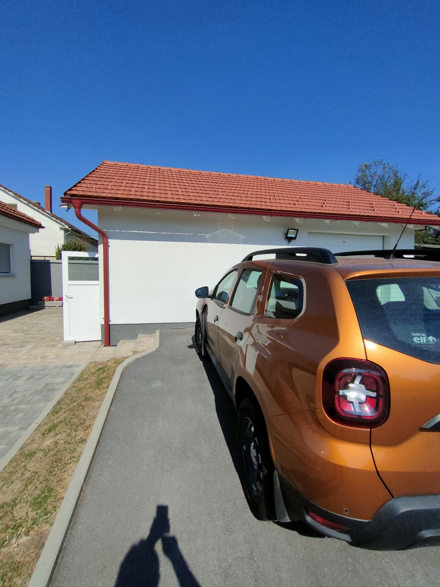

Pomoćni objekti
Garaža, podrum, spremište i radionica

Garaža, spremište i podrum
Uz glavnu kuću nalaze se fizički odvojene pomoćne prostorije. Garaža, spremište i podrum zajedno čine funkcionalan dodatni prostor za vozilo, pohranu i druge potrebe.
Garaža je opremljena automatskim vratima na motor i daljinskim upravljanjem, a ispod nje nalazi se podrum.

Zasebna radionica
Nasuprot garaži nalazi se potpuno uređena radionica s peći na drva.
Prostor je fizički odvojen od glavne kuće i odmah spreman za korištenje.
Sve pomoćne prostorije imaju termo fasadu kao i kuća, popločene su pločicama i priključene na električnu energiju.

Prostor za život i boravak na otvorenom
Uređena i ograđena okućnica pruža dovoljno prostora za odmor, vrt, druženje i različite sadržaje na otvorenom.